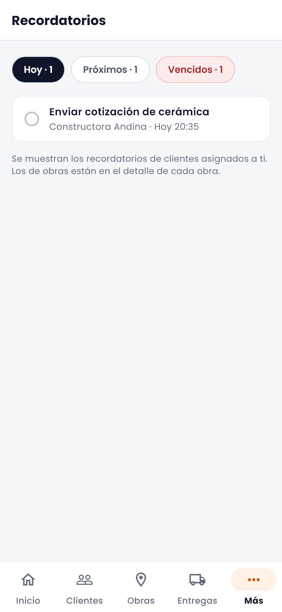
Recordatorios
En Inicio y en Más → Recordatorios, agrupados en Hoy, Próximos y Vencidos. Toca el círculo para marcarlo como hecho. Los de obras están en cada obra.
Todo lo que necesitas para usar UrbanTrackCRM en la calle: abrir tu jornada, registrar visitas con GPS, cuidar a tus clientes y obras, y seguir trabajando aunque te quedes sin señal.
Un día con la app
Los nombres se adaptan a tu empresa. Según tu rubro, la app puede llamar a tus clientes Contactos o Clientes, y a tus proyectos Seguimientos u Obras. Las pantallas muestran una empresa de construcción y datos de ejemplo.
01 · Primeros pasos
La barra inferior siempre está a mano. Solo verás las secciones que tu empresa tiene activas y que tu usuario puede usar.
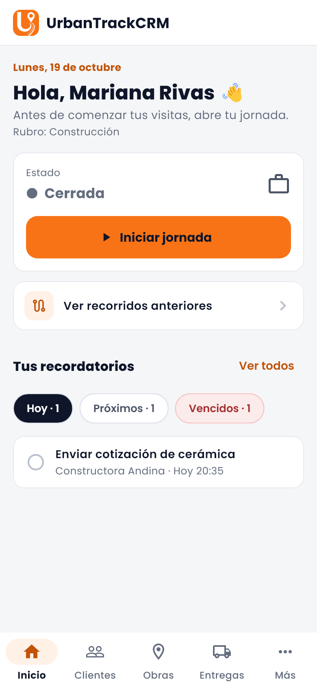
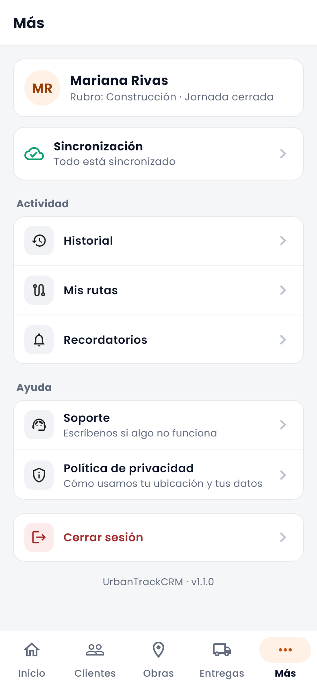
02 · Acceso
La sesión queda guardada de forma segura en el teléfono y se renueva sola.
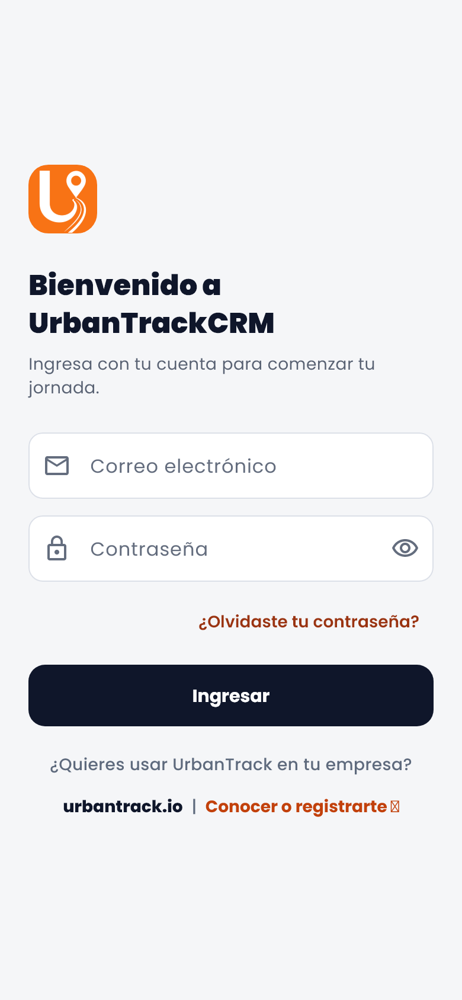
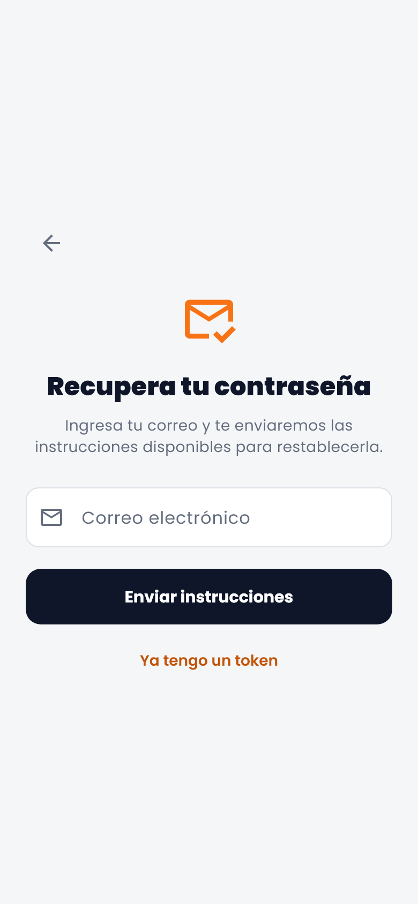
03 · Al empezar el día
La jornada marca tu horario de trabajo. Mientras está abierta puedes registrar visitas y la app guarda tu recorrido.
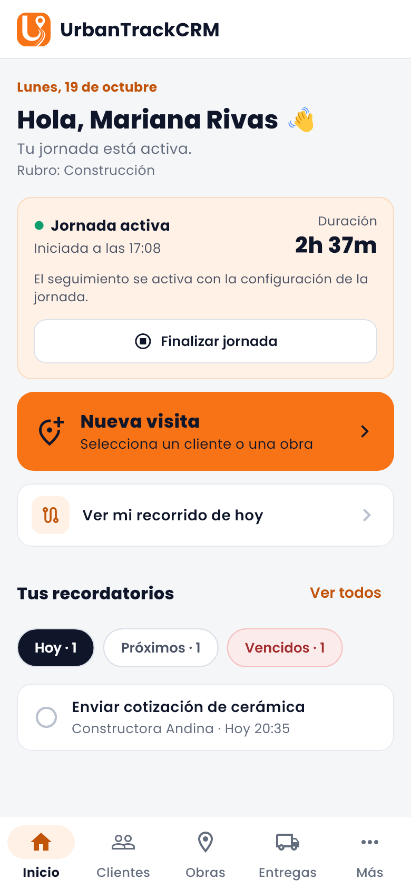
04 · En la calle
Cada visita tiene un inicio (check-in) y un cierre (check-out). La app guarda la hora real del teléfono y el GPS en ambos momentos.
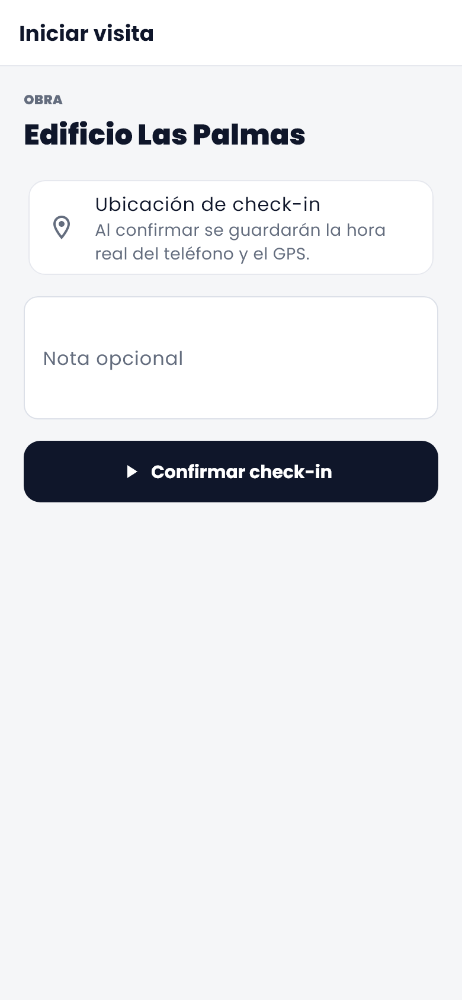
Toca Nueva visita, elige un cliente o una obra, agrega una nota si quieres y toca Confirmar check-in.
La tarjeta Visita en curso queda en Inicio. En la ficha de la obra usa Agregar fotos para dejar evidencia.
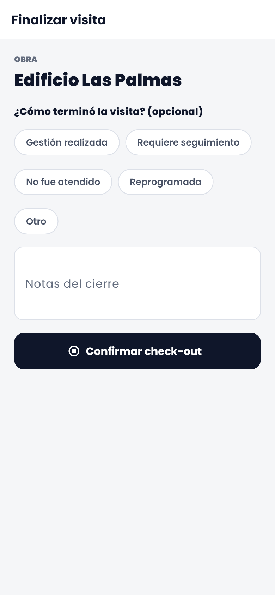
Elige cómo terminó (Gestión realizada, Requiere seguimiento, No fue atendido, Reprogramada u Otro), agrega notas y toca Confirmar check-out.
Una visita a la vez. Si ya tienes una en curso, las fichas muestran “Hay otra visita en curso” con el botón Ir para volver a ella y cerrarla.
05 · Tu cartera
Encuentra a cualquier cliente en segundos y contáctalo sin salir de la app.
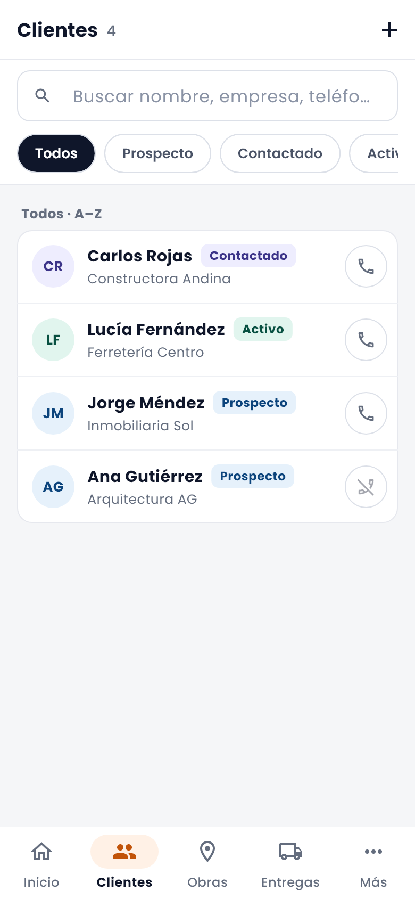
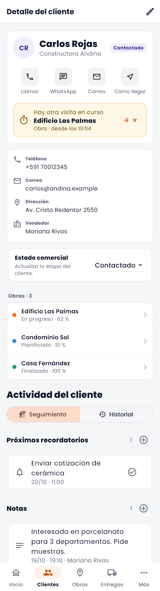
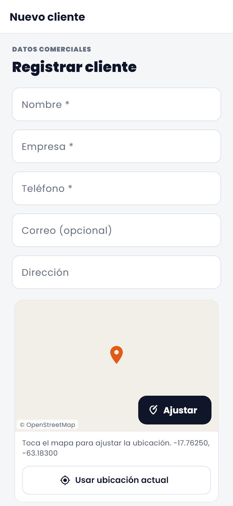
06 · Proyectos
Ubicación, avance, monto, estado, fotos, archivos y todas las visitas que se le hicieron.
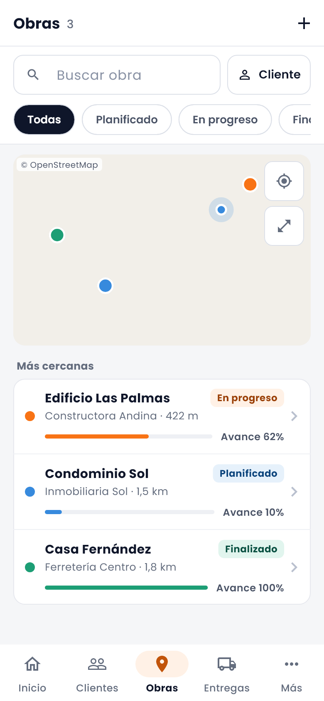
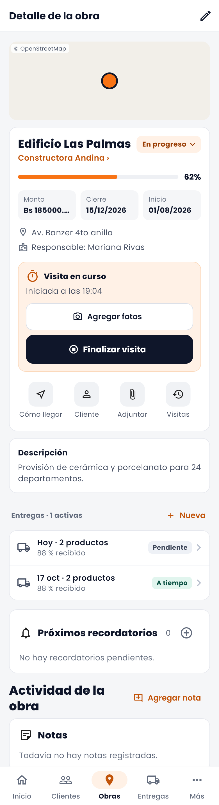
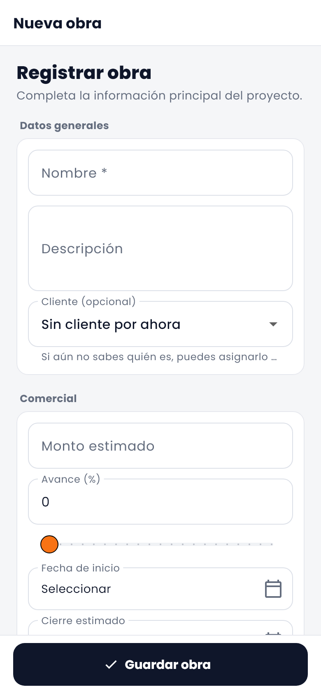
07 · Material en obra
Si tu empresa usa el módulo de entregas, ves lo comprometido para cada obra y registras lo que realmente llegó.
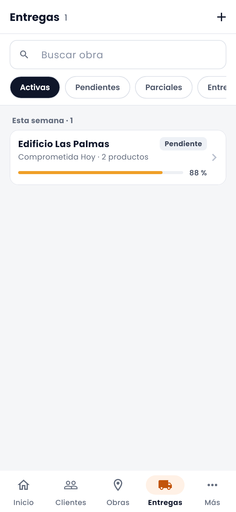
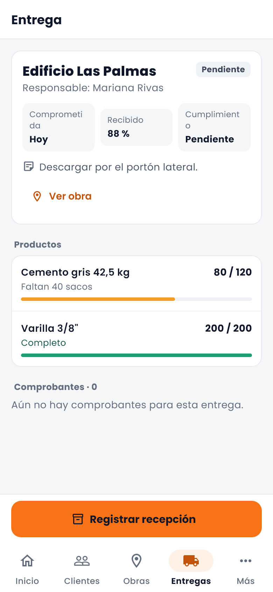
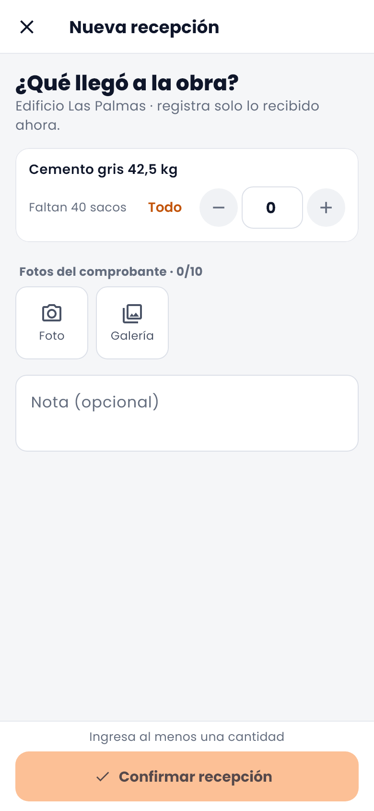
08 · Que nada se escape
Lo que tienes pendiente, lo que ya hiciste y por dónde pasaste.

En Inicio y en Más → Recordatorios, agrupados en Hoy, Próximos y Vencidos. Toca el círculo para marcarlo como hecho. Los de obras están en cada obra.
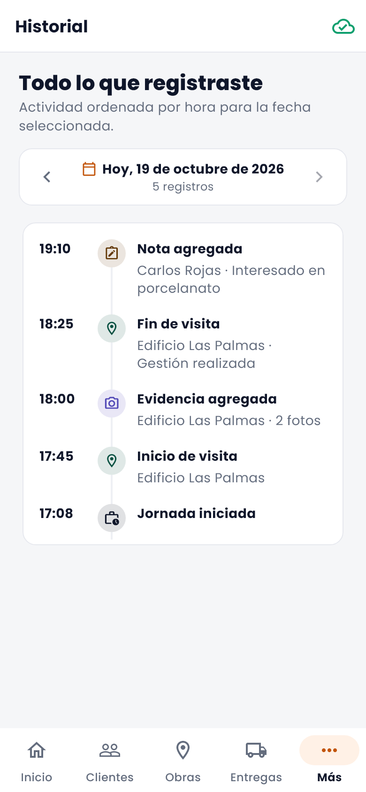
En Más → Historial: tu jornada, visitas, notas y evidencias del día, ordenadas por hora. Cambia de día con las flechas.
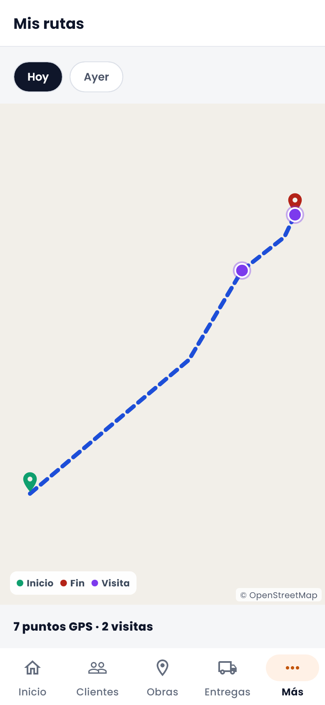
Tu recorrido en el mapa: inicio en verde, fin en rojo y cada visita en morado. Elige Hoy o Ayer.
09 · Sin señal
En sótanos, obras alejadas o zonas sin cobertura la app guarda todo en el teléfono y lo envía sola cuando vuelve la señal.
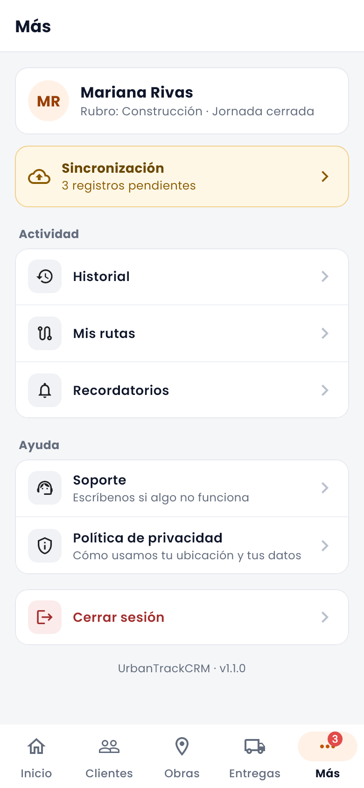
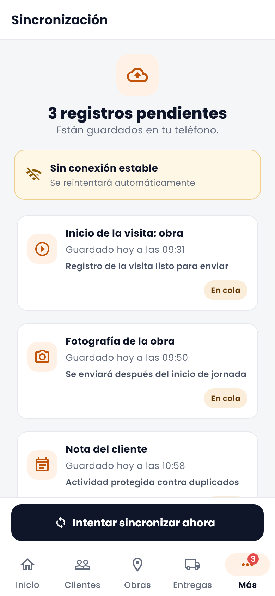
10 · Al terminar el día
Registra tu hora de salida y detiene el seguimiento de ubicación.
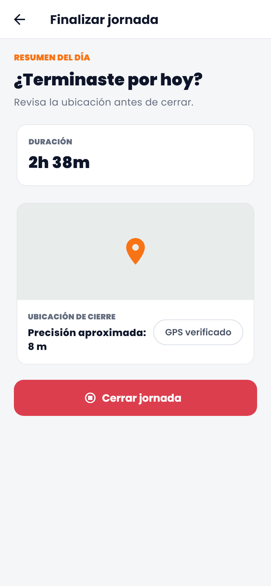
11 · Ayuda
Si tu empresa usa seguimiento, verás Probar GPS en la tarjeta de la jornada. Revisa permisos, GPS, notificaciones y batería, y te dice qué corregir.
En Más toca Cerrar sesión. Si tienes pendientes o la jornada abierta, la app te avisa antes.
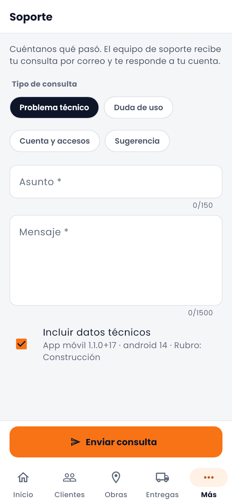
12 · Si algo no sale
Revisa que la ubicación del teléfono esté encendida y que la app tenga permiso de ubicación. Si lo negaste, actívalo en Ajustes → Aplicaciones → UrbanTrackCRM → Permisos → Ubicación, y vuelve a tocar Iniciar jornada.
Usa Probar GPS. Lo más común es que el permiso esté en “solo mientras usas la app” (debe ser Permitir siempre), que las notificaciones estén apagadas o que Android ahorre batería con la app. En Ajustes de batería busca UrbanTrackCRM y quítale las restricciones.
Necesitas la jornada abierta y ninguna otra visita en curso. El aviso “Hay otra visita en curso” te lleva a ella con Ir: finalízala y empieza la nueva.
Conéctate a una red estable y entra a Más → Sincronización para tocar Intentar sincronizar ahora. Algunos registros esperan a otro (una foto se envía después de su check-in) y salen solos en orden.
La app muestra solo las secciones que tu empresa tiene activas y que tu usuario puede usar. Pídeselas al administrador de tu empresa.
Toca ¿Olvidaste tu contraseña? en la pantalla de ingreso y sigue el correo. Si el enlace no abre la app, usa Ya tengo un token y pega el token.
Descarga la app
Instala UrbanTrackCRM e ingresa con la cuenta que te dio tu empresa.